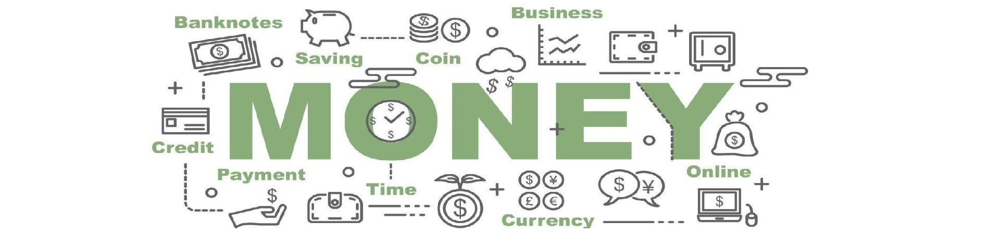

|  | |||
| Início | Sobre | Notícias | Contato |
Notícias:'Regra dos 10 melhores dias' mostra que comprar BTC em momentos de queda gera maiores retornos, diz analistaAnálise de preços 07/10: SPX, DXY, BTC, ETH, BNB, XRP, ADA, SOL, DOGE, MATIC |
|||
| Rodape
It is a long established fact that a reader will be distracted by the readable content of a page when looking at its layout. |
|||